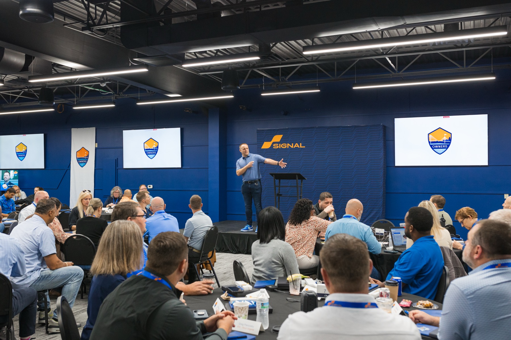
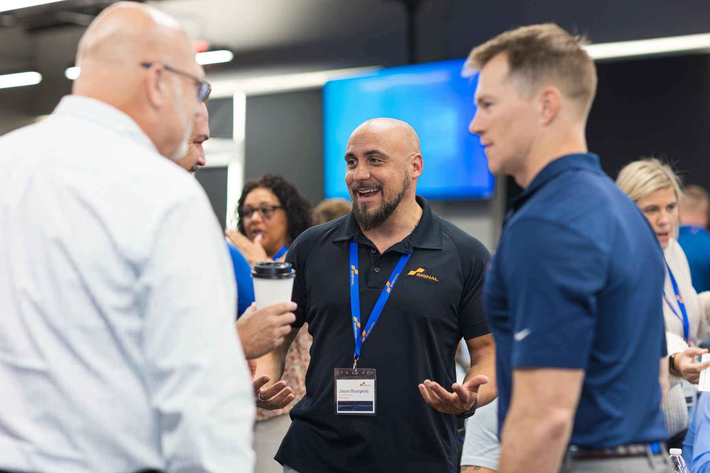
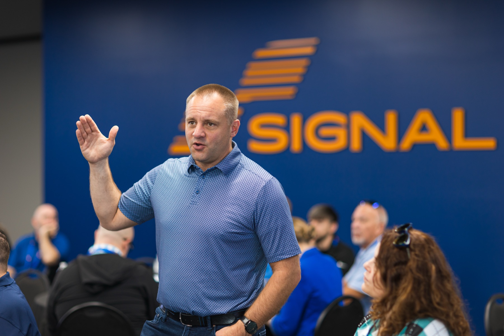
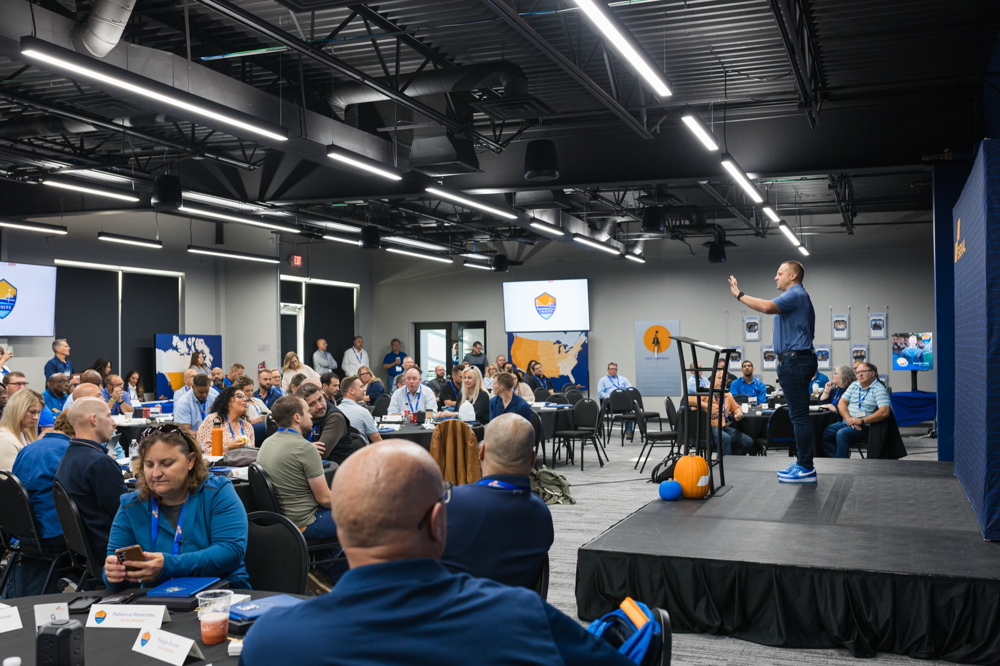
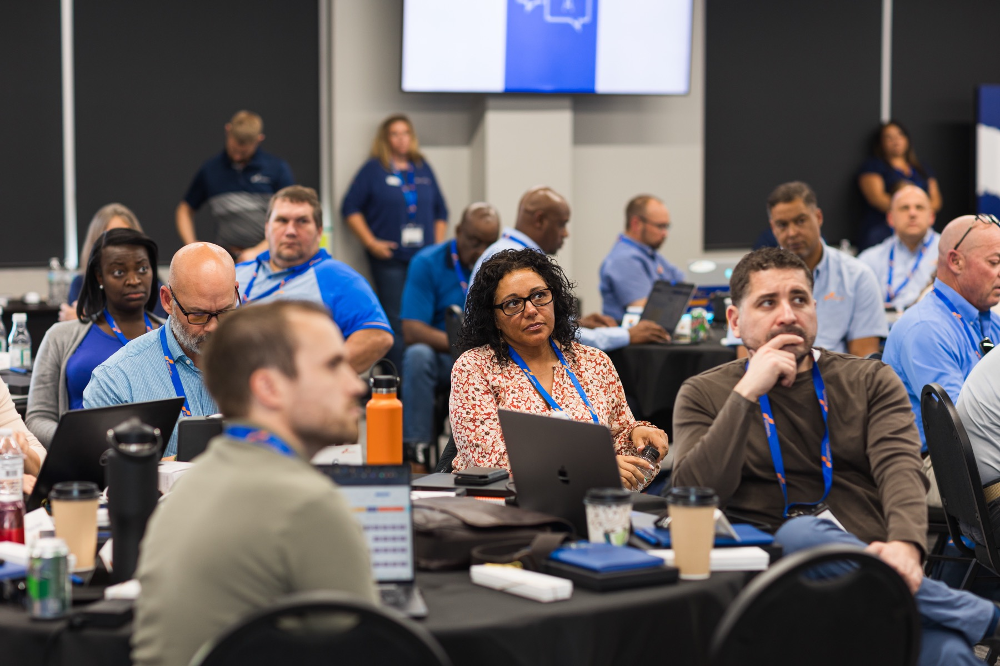
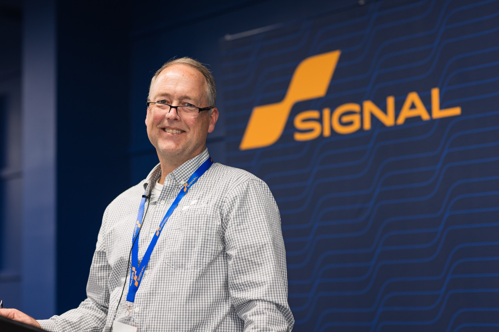
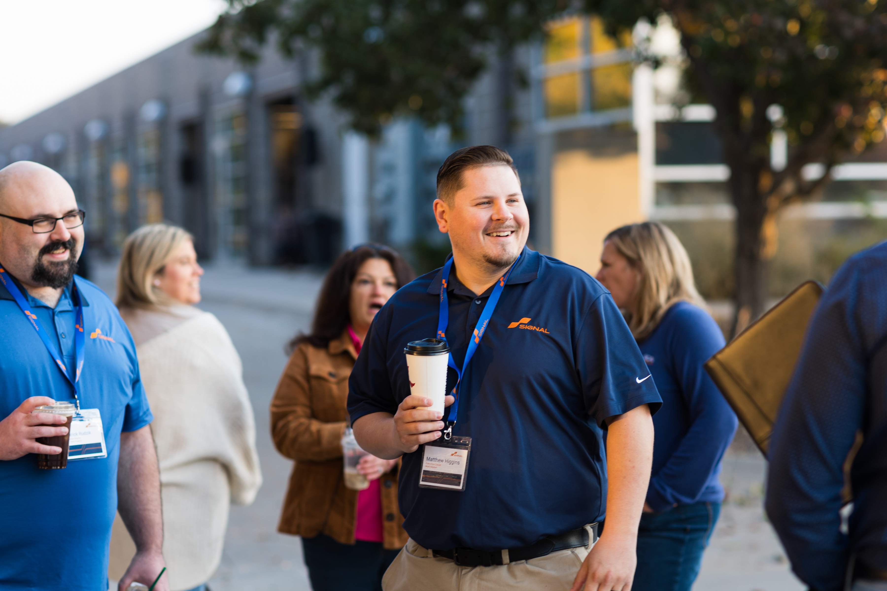
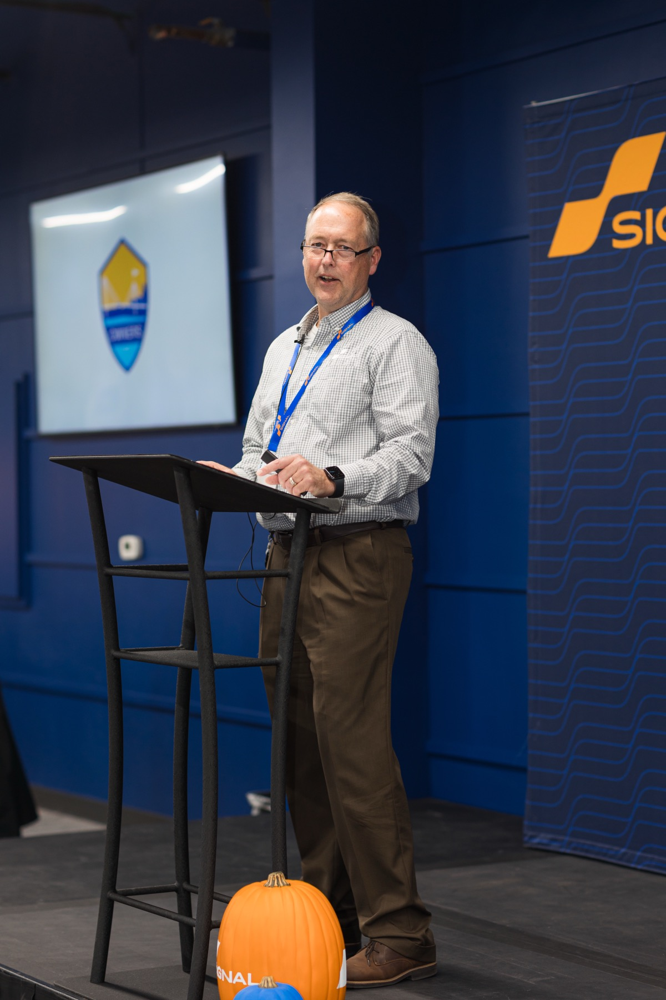
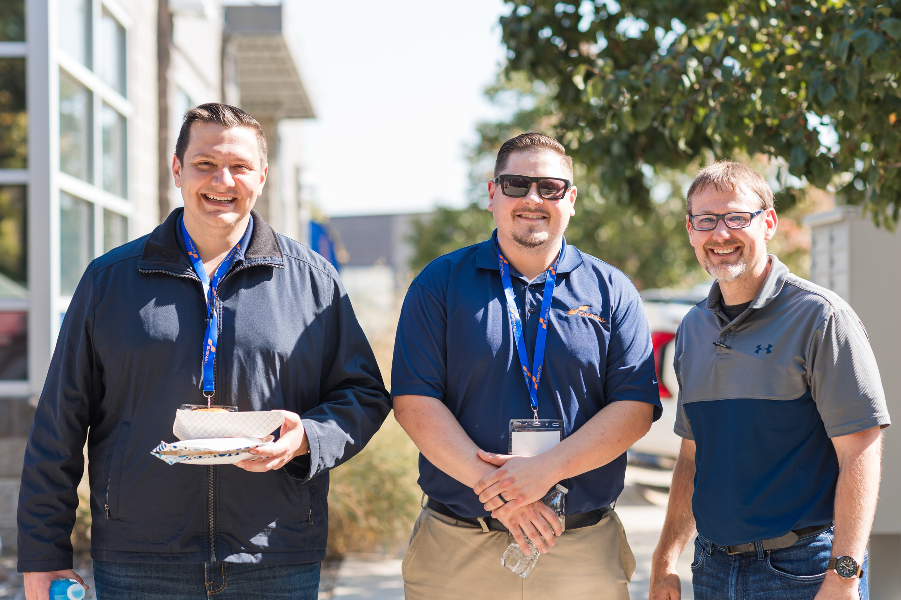

Signal’s Leadership Summit
Two summits became one. The owners and the leadership teams who actually run the business, in the same room.

The work that shows up in markets back home. Less spectator, more operator.

Leadership Operations SalesReserve your seat. Bring the team.
October 6 to 8 at the Home Office. Bring the people running the business with you.
What three days look like.
Mornings open with the whole network together. Afternoons split into the work that matters back home.

-
Oct 5
Monday · Optional
Kids Against Hunger and Vala’s Pumpkin Patch.
Pack meals alongside other Signal owners in a friendly competition, then close the day at Vala’s Pumpkin Patch, Omaha’s favorite excuse to be outside in October. A soft start before the work begins.
-
Oct 6
Tuesday
Where the business is going.
Reed and the executive team open with what’s happening across Signal: strategic direction for the next year, operational priorities, what to plan around. Then space for the questions that don’t make it onto a slide.
-
Oct 7
Wednesday
Sales, operations, retention.
Breakouts led by owners and the home office team. Pricing, hiring, the operations playbooks other markets are running, what’s working in retention, where the levers actually are.
-
Oct 8
Thursday
Leading the people on your team.
How owners are developing the people who report to them. Leading across distance, hard conversations, building a bench. Less framework, more case study.
The full Signal network.
Owners and the leadership teams who run the business with them. Small enough for real conversation, big enough to matter.
The full
Signal network.
Owners and the leadership teams who run the business with them. Small enough for real conversation, big enough to matter.
Speakers in the room.
Reed and the executive team alongside owners and operators leading sessions on sales, retention, leadership, and where Signal is going.





The conversations between sessions are worth as much as the sessions themselves.
The week starts before the week starts.
Afternoon at Kids Against Hunger, packing meals alongside other Signal owners. A friendly competition, a few good laughs, then Vala’s Pumpkin Patch into the evening.
Add to your trip
Common questions.
Who should attend?
Franchise owners, executive directors, directors, and the people they trust to run the day-to-day. Built for the people running and growing Signal franchises.
Can I bring my leadership team?
Yes. That is the point of the new format. The Summit was rebuilt so owners and their leadership teams could attend together for the first time. There is no cap on team members per franchise.
What does registration include?
Access to every session and breakout, food-truck lunches and refreshments throughout the week, and the optional Monday kickoff (Kids Against Hunger and Vala’s Pumpkin Patch). Hotel and travel are not included.
Do I need to attend all three days?
The schedule is built as one piece. Plan to be there start to finish. Owners consistently say the conversations between sessions are worth as much as the sessions themselves.
Where is Leadership Summit held?
The Signal Home Office in Omaha, Nebraska. 3880 S. 149th St., Ste. 106.